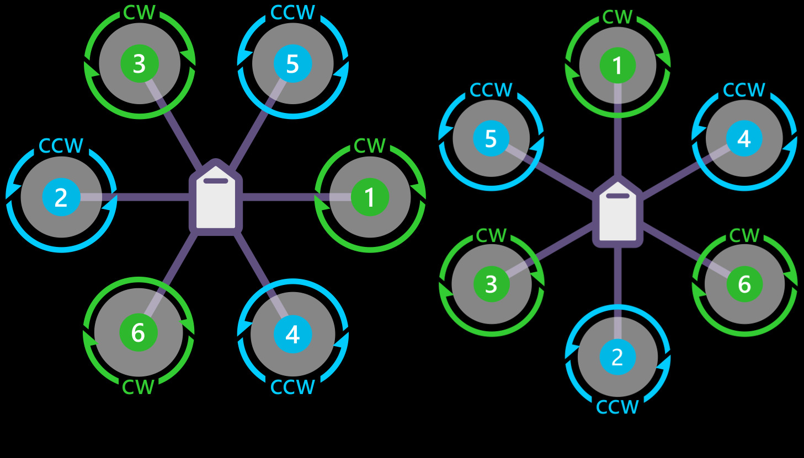

The "brains" controlling the hexacopter is a Raspberry Pi 4 (rpi) computer. The rpi must process all the inputs provided by the controller and the sensors: the motion processing unit (MPU), altimeter, and GPS module. With this information, the rpi must calculate the speed each of the individual motors must spin in order to keep the hexacopter stable and move the in the correct direction. This task is challenging to accomplish as all this be done in real time, with thousands of micro-adjustments being sent to each of the motors every second. Generally this is done with a pre-programming off-the-shelf flight controller. However for this project all of this funcationality is programming manually in Python.
The control sequence for the hexacopter takes the following steps (and is shown in the image):
- rpi receives input from PS2 controller, motion processing unit, alimeter, GPS
- rpi determines rotor speed for each motor
- rpi sends control signal to PWM contoller
- pwm controller converts rotor speed to PWM signal, sends signal to ESC controllers
- ESC controllers power motors with appropriate speeds
The Raspberry Pi is able to send and receive information between all the controllers and sensors using a communication protocal known as I2C. This communication scheme is ideal for this scenario as it requires only two wired connections from the raspberry pi to all the different modules which all the devices can connect to. The limits the need for additional wires which can clutter the build and add extra weight. The control scheme for the motors is a hexa-x configuration where each motors spins in alternating directions from the adjacent motors.
